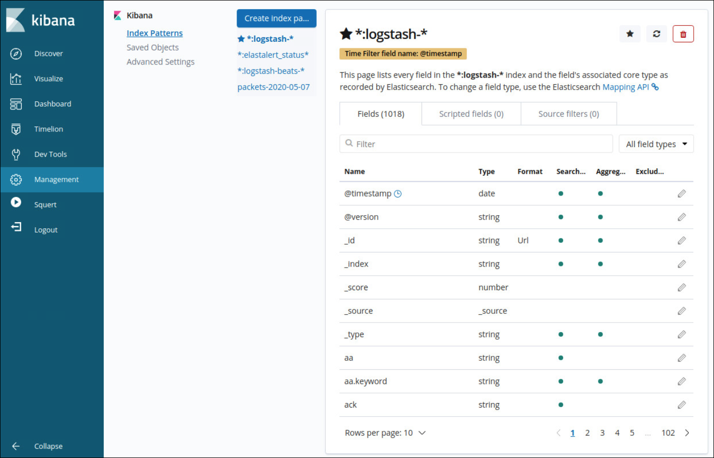
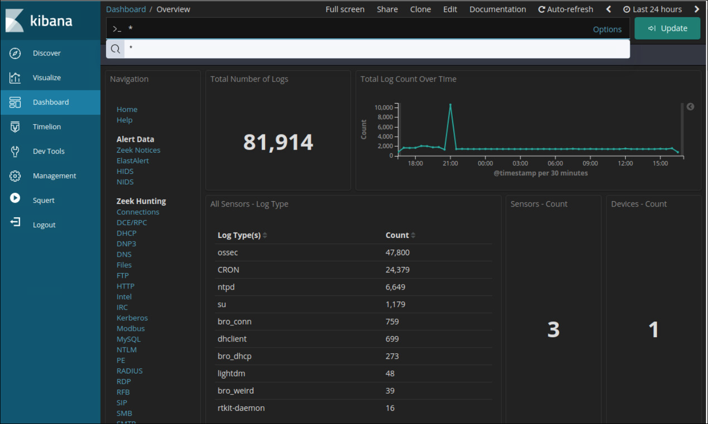

27.1.1 ELK
Una red típica tiene una multitud de registros diferentes para realizar un seguimiento y la mayoría de esos registros están en diferentes formatos. Con enormes cantidades de datos dispares, ¿cómo es posible obtener una visión general de las operaciones de red al tiempo que se perciben anomalías sutiles o cambios en la red?
Elastic Stack intenta resolver este problema proporcionando una vista de interfaz única en una red heterogénea. Elastic Stack consta de Elasticsearch, Logstash y Kibana (ELK). Es un marco modular y altamente escalable para ingerir, analizar, almacenar y visualizar datos. Elasticsearch es una plataforma de núcleo abierto (código abierto en los componentes principales) para buscar y analizar los datos de una organización en tiempo casi real. Se puede utilizar en muchos contextos diferentes, pero ha ganado popularidad en seguridad de red como herramienta SIEM. Security Onion incluye ELK y otros componentes de Elastic, incluidos:
Elasticsearch, que es el componente del motor de búsqueda, utiliza servicios web RESTful y API, un clúster de computación distribuido con varios nodos de servidor y una base de datos NoSQL distribuida formada por documentos JSON. Se pueden agregar funciones adicionales a través de extensiones creadas a medida. La empresa Elasticsearch ofrece una extensión comercial llamada X-Pack que añade seguridad, alertas, monitoreo, informes y gráficos. La compañía también ofrece un complemento de aprendizaje automático, así como su propio producto Elastic SIEM.
Logstash permite la recopilación y normalización de datos de red en índices de datos que Elasticsearch puede buscar eficientemente. Los módulos Logstash y Beats se utilizan para ingerir datos en el clúster de Elasticsearch.
Kibana proporciona una interfaz gráfica a los datos compila dos por Elasticsearch. Permite la visualización de datos de red y proporciona herramientas y accesos directos para consultar esos datos con el fin de aislar posibles violaciones de seguridad.
Los principales componentes de código abierto de Elastic Stack son Logstash, Beats, Elasticsearch y Kibana, como se muestra en la figura.
Componentes de núcleo elástico de pila

Logstash
Logstash es un sistema de extracción, transformación y carga con la capacidad de tomar varias fuentes de datos de registro y transformar o analizar los datos a través de la traducción, clasificación, agregación, división y validación. Después de transformar los datos, los datos se cargan en la base de datos de Elasticsearch en el formato de archivo adecuado. La figura muestra algunos de los campos que están disponibles en Logstash como se muestra en la interfaz de administración de Kibana.
Marco de administración de Kibana que muestra detalles del índice Logstash

Beats
Los agentes de Beats son clientes de software de código abierto que se utilizan para enviar datos operativos directamente a Elasticsearch o a través de Logstash. Elastic, así como la comunidad de código abierto, desarrollan activamente agentes de Beats, por lo que hay una gran variedad de agentes de Beats para enviar datos a Elasticsearch casi en tiempo real. Algunos de los agentes Beats proporcionados por Elastic son Auditbeat para datos de auditoría, Metricbeat para datos de métrica, Heartbeat para disponibilidad, Packetbeat para tráfico de red, Journalbeat para diarios Systemd y registros de eventos de Winlogbeat para Windows. Algunos Beats de origen comunitario son Amazonbeat, Apachebeat, Dockbeat, Nginxbeat y Mqttbeat, por nombrar algunos.
Elasticsearch
Elasticsearch es un motor de búsqueda empresarial multiplataforma escrito en Java. Los componentes principales son de código abierto con complementos comerciales llamados X-packs que dan funcionalidad adicional. Elasticsearch admite búsquedas casi en tiempo real utilizando API REST simples para crear o actualizar documentos JavaScript Object Notation (JSON) mediante solicitudes HTTP. Las búsquedas se pueden realizar utilizando cualquier programa capaz de realizar solicitudes HTTP como un navegador web, Postman, cURL, etc. Estas API también pueden ser accedidas por Python u otros scripts de lenguaje de programación para operaciones automatizadas.
La estructura de datos de Elasticsearch se denomina índice invertido, que está diseñado para permitir búsquedas de texto completo muy rápidas. Un índice es como una base de datos, es un espacio de nombres para una colección de documentos que están relacionados entre sí. Un índice puede particionarse o asignarse en diferentes tipos. Si compara un índice de Elasticsearch con una base de datos relacional tradicional, el índice es similar a la base de datos, los tipos son como las tablas y los documentos son como las columnas y filas, como se muestra en la tabla.
| Componente MySQL: | base de datos | tablas | columnas / filas |
|---|---|---|---|
| Componente de Elasticsearch: | index | topos | documentos |
Elasticsearch almacena datos en documentos con formato JSON. Un documento JSON se organiza en jerarquías de pares clave/valor, con una clave que es un nombre y el valor correspondiente es una cadena, número, booleano, fecha, matriz u otro tipo de datos.
Kibana
Kibana proporciona una interfaz gráfica de usuario fácil de usar para administrar Elasticsearch. Mediante el uso de un navegador web, un analista puede utilizar la interfaz de Kibana para buscar y ver índices. La pestaña de administración le permite crear y administrar índices y sus tipos y formatos. La pestaña de descubrimiento es una forma rápida y potente de ver sus datos y buscarlos utilizando las herramientas de búsqueda. La pestaña visualizar le permite crear visualizaciones personalizadas como gráficos de barras, gráficos de líneas, gráficos circulares, mapas térmicos y mucho más. Las visualizaciones que cree se pueden organizar en paneles personalizados para supervisar y analizar sus datos. En la figura se muestra un tablero de Kibana.
Un tablero de Kibana

27.1.2 Reducción de datos
Es impresionante el volumen de tráfico de red que recopila la captura de paquetes y la cantidad de entradas del archivo de registro y alertas que generan los dispositivos de red y de seguridad. Incluso con los avances recientes en datos masivos, el procesamiento, almacenamiento, acceso y archivado de datos relacionados con el NSM es una tarea abrumadora. Por esta razón, es importante identificar los datos de red que deben recopilarse. No es necesario recopilar cada entrada, paquete y alerta del archivo de registro. Si se limita el volumen de datos, herramientas como Elasticsearch son mucho más útiles, como se ve en la figura.
Hay tráfico de la red que tiene poco valor para el NSM. Los datos encriptados, como el tráfico de IPsec o SSL, son prácticamente ilegibles. También es posible excluir más tráfico, como el tráfico de rutina que producen los protocolos de routing. Otros protocolos de difusión y multidifusión generalmente se pueden eliminar de las capturas de paquetes, al igual que el tráfico de otros protocolos que generan mucho tráfico de rutina.
Además, las alertas que genera un HIDS, como la auditoría de seguridad de Windows u OSSEC, deben evaluarse para determinar su relevancia. Algunas son informativas o tienen poco impacto potencial para la seguridad. Estos mensajes se pueden filtrar de los datos de NSM. Del mismo modo, syslog puede almacenar los mensajes de muy baja gravedad que podrían ignorarse para disminuir la cantidad de datos de NSM que se deben manejar.

27.1.3 Normalización de los datos
La normalización de datos es el proceso de combinar datos de varias fuentes en un formato común. Logstash proporciona una serie de transformaciones que procesan datos de seguridad y los transforman antes de agregarlos a Elasticsearch. Es posible crear complementos adicionales que se ajusten a las necesidades de la organización.
Un esquema común especifica los nombres y formatos de los campos de datos requeridos. El formato de los campos de datos puede variar mucho entre las fuentes. Sin embargo, para lograr búsquedas eficaces, deben unificarse los campos de datos. Por ejemplo, es posible representar en formatos diferentes las direcciones IPv6, las direcciones MAC y la información de fecha y hora. Del mismo modo, el formato de las máscaras de subred, los registros de DNS y otros elementos puede variar entre fuentes de datos. Las transformaciones Logstash aceptan los datos en su formato nativo y hacen que los elementos de los datos sean coherentes en todos los orígenes. Por ejemplo, se utilizará un único formato para las direcciones y marcas de hora para los datos de todas las fuentes.
Formatos de direcciones IPv6
Formatos de MAC
Formatos de fecha
La normalización de datos es necesaria para simplificar la búsqueda de eventos correlacionados. Si existieran valores con diferente formato en los datos de NSM para las direcciones IPv6, por ejemplo, sería necesario crear un término de consulta por separado para cada variación a fin de que la consulta devuelva eventos correlacionados.
27.1.4 Archivado de datos
A todo el mundo le encantaría poder recopilar y guardar todo por si acaso. Sin embargo, conservar los datos de NSM por tiempo indefinido no es viable debido a limitaciones de almacenamiento y acceso. Cabe destacar que el período de retención para determinados tipos de información de seguridad puede especificarse en marcos de trabajo para el cumplimiento. Por ejemplo, el Concejo de estándares de seguridad de la industria de tarjetas de pago (Payment Card Industry Security Standards Council PCI DSS) exige que se retenga durante un año la documentación de auditoría de las actividades de los usuarios relacionadas con la información protegida.
Security Onion cuenta con períodos de retención diferentes datos distintos tipos de datos de NSM. Para pcaps y registros sin formato de Bro, un valor asignado en el securityonion.conf archivo controla el porcentaje de espacio en disco que pueden usar los archivos de registro. De forma predeterminada, este valor se establece en 90%. Para Elasticsearch, la retención de índices de datos es controlada por el curator de Elasticsearch. Curator se ejecuta en un contenedor Docker y se ejecuta cada minuto según los cron trabajos. Curator registra su actividad en curator.log. Curator establece de forma predeterminada los índices de cierre de más de 30 días. Para modificar esto, cambie CURATOR_CLOSE_DAYS en /etc/nsm/securityonion.conf. A medida que un disco alcanza la capacidad, Curator elimina los índices antiguos para evitar que el disco se llene. Para cambiar el límite, modifique LOG_SIZE_LIMIT en /etc/nsm/securityonion.conf.
Los datos de alerta de Sguil se retienen durante 30 días de manera predeterminada. Este valor se establece en el securityonion.conf archivo.
Se sabe que Security Onion requiere una gran cantidad de almacenamiento y memoria RAM para funcionar correctamente. De acuerdo con el tamaño de la red, es posible que se necesiten varios terabytes de almacenamiento. Por supuesto, siempre es posible archivar los datos de Security Onion en dispositivos de almacenamiento externo mediante un sistema de archivado de datos, de acuerdo con las necesidades y capacidades de la organización.
Nota: Los lugares de almacenamiento para los diferentes tipos de datos de Security Onion variarán en función de la implementación de Security Onion.
27.1.5 Práctica de laboratorio - Convertir datos a un formato universal
Las entradas de registro son generadas por dispositivos de red, sistemas operativos, aplicaciones y diversos tipos de dispositivos programables. Los archivos que contienen una secuencia temporizada de entradas de registro se denominan archivos de registro. Por naturaleza, los archivos de registro registran eventos que son relevantes a la fuente. La sintaxis y el formato de los datos que se encuentran dentro de los mensajes de registro a menudo son definidos por el desarrollador de la aplicación. Por lo tanto, la terminología utilizada en las entradas de registro a menudo varía según la fuente. Por ejemplo, dependiendo de la fuente, los términos iniciar sesión, conectarse, evento de autenticación y conexión del usuario, pueden aparecer en entradas de registro para describir la autenticación exitosa de un usuario en un servidor.
Es aconsejable tener terminología consistente y uniforme en los archivos de registro generados por diferentes fuentes. Esto es especialmente cierto cuando todos los archivos de registro son recopilados por un punto centralizado. El término normalización se refiere al proceso de convertir partes de un mensaje, en este caso una entrada de registro, a un formato común.
En esta práctica de laboratorio utilizarán herramientas de la línea de comando para normalizar las entradas de registro manualmente. En la parte 2, se normalizará el campo de la marca de hora. En la parte 3, deberá normalizarse el campo IPv6.